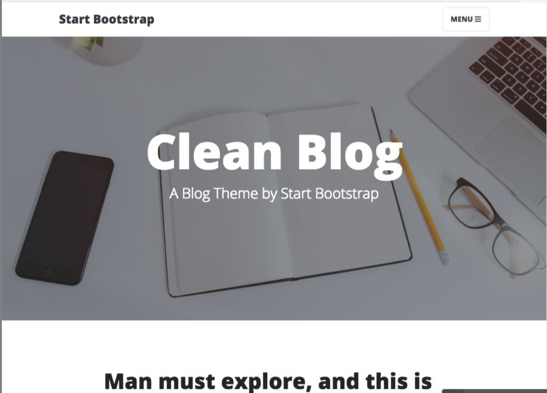
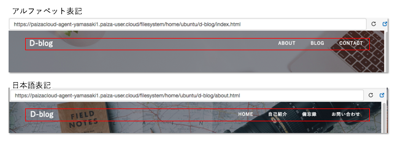
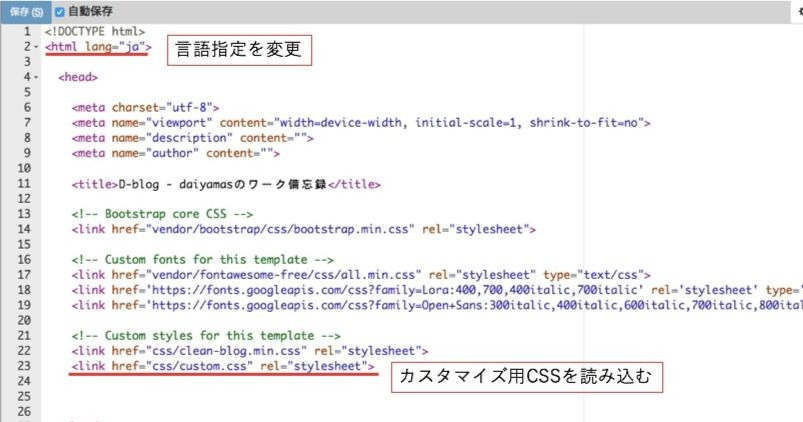
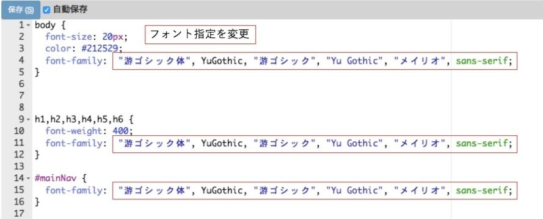

Bootstrapのテーマをベースに、カスタマイズを行います。
ポートフォリオでは、自己紹介のページはもちろん、ワークスキルの進捗や技術メモとして、ブログ形式の記事を毎日1回更新していきます。具体的にはBootstrapの無料テーマをベースに、カスタマイズをかけていきながらページを完成させていきます。現時点で完成していない箇所は多々ありますが、仕様の変更・追加をくわえながらその詳細についてもこのブログの記事の中で触れていく予定です。
今回は「Clean-blog」というテーマを選びました。TOP／ABOUT／BLOG／CONTACTの4つの構成になっているため、カスタマイズがかけやすいためです。 
現時点ではnavbarのネーム以外は特に仕様変更を行わず、記事ページの公開を先行して行います。各ページの仕様変更については随時この記事に書き留めて行こうと考えています。
ひとまずnavbarのネームのみ、アルファベット表記から日本語表記に変えてみました。テキストの差し替えだけおこなっただけでは、日本語フォントにふさわしい見映えに変更できませんので、新たに作成したCSSファイルで設定を行う必要があります。 
どういった方法でBootstrapのカスタマイズを行なっていくか?
Bootstrapのカスタマイズを行なっていく上で、どういった方法を採用するかによって仕上がりも全く違うものになります。今回はすでに定義されているスタイルやコンポーネントを継承しつつ、デザインや各部の設定については上書き用のファイルを使用して行います。具体的には「custom.css」というcssファイルを用意してhtmlファイルに読み込ませます。各ページのhead部分に下記のように記述します。
またデフォルトでは言語設定は「en」になっているので「ja」に変更も行います。 
フォントもデフォルトでは欧文フォントの設定しか入っていないため、日本語フォントに変更をかけます。今回は游ゴシック系にしています。body要素、見出し要素、navbarの設定を変更しましたが、元のCSSファイル（clean-blog.css）をチェックしてその他にも欧文フォントのみの設定がないかチェックが必要です。 